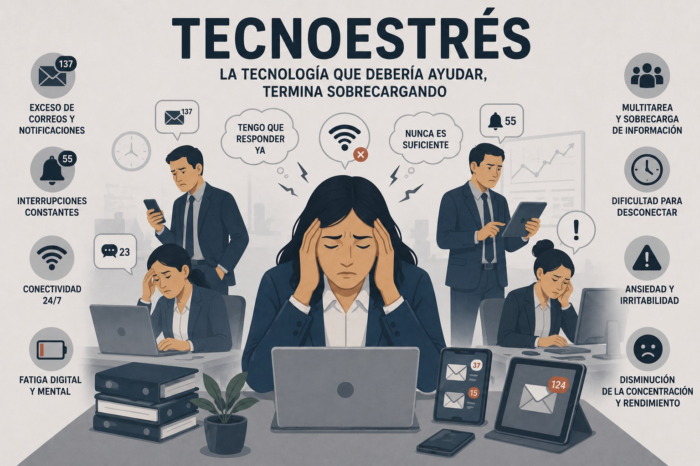

Riesgo psicosocial
Tecnoestrés
Efectos psicosociales negativos asociados al uso intensivo, complejo o invasivo de tecnologías digitales.

Definición y concepto
El concepto de tecnoestrés está directamente relacionado con los efectos psicosociales negativos del uso de las TIC. Fue acuñado por primera vez por el psiquiatra norteamericano Craig Brod en 1984 en su libro "Technostress: The Human Cost of the Computer Revolution". Lo define como: "una enfermedad de adaptación causada por la falta de habilidad para tratar con las nuevas tecnologías del ordenador de manera saludable" (Salanova et al., 2004).
En función de las características del uso de la tecnología y de las respuestas generadas en las personas, el tecnoestrés puede manifestarse a través de diferentes tipos:
Tecnoansiedad: surge de la necesidad de estar conectado constantemente y se caracteriza por pensamientos negativos sobre la propia capacidad y competencia frente a las nuevas tecnologías, así como actitudes escépticas, miedo o rechazo hacia su implementación en el trabajo.
Tecnoadicción: corresponde a la dependencia extrema de dispositivos y plataformas tecnológicas. Cuando no se puede acceder a estas herramientas, la persona puede experimentar malestar, nerviosismo, sudoración, palpitaciones o dificultad para dormir.
Tecnofatiga: corresponde al cansancio mental y físico provocado por el uso prolongado de dispositivos electrónicos y se caracteriza por sentimientos de agotamiento y falta de energía.
Tecnofobia: hace referencia al miedo o rechazo hacia las nuevas tecnologías y al uso de nuevos dispositivos por temor a no comprenderlos (Proyecto Hombre Madrid, 2024).
Causas
Estas causas pueden presentarse de manera simultánea y generar una percepción constante de demanda tecnológica y disponibilidad permanente. La aparición del tecnoestrés puede estar relacionada con factores derivados de la interacción constante con entornos digitales y las demandas sociales asociadas al uso de la tecnología, entre ellos:
Sobrecarga de información social: demasiada información que recibe un usuario pasivamente a través de publicaciones de su entorno social.
Sobrecarga de comunicación social: demasiada comunicación activa con individuos en un lugar y tiempo inapropiado o con contenido inconveniente.
Sobrecarga de acción social: alta demanda de acciones sociales por parte del entorno (Colegio Colombiano de Psicólogos [COLPSIC], 2021).
Consecuencias
La exposición continua a factores asociados al tecnoestrés puede generar efectos en diferentes dimensiones del entorno laboral y del bienestar de los trabajadores.
- Impacto en el desempeño laboral
Sobrecarga de roles: aumenta la percepción de complejidad de las tareas y las contradicciones de rol, lo que se manifiesta en extensión del tiempo de trabajo, conflictos entre trabajo y hogar, entre otros.
Reducción de la productividad: la tecno-complejidad obliga a los usuarios a mantenerse actualizados frente a las innovaciones tecnológicas y posiblemente a incurrir en errores que implican pérdida del tiempo. La incertidumbre tecnológica puede requerir la resolución de problemas y asistencia técnica.
Baja motivación e innovación en las tareas: la sobrecarga tecnológica produce un procesamiento de información ineficaz que no deja tiempo al pensamiento creativo y la imaginación.
Impacto en la percepción y experiencia laboral
Reducción de la satisfacción laboral: los profesionales que experimentan tecnoestrés tienden a realizar evaluaciones negativas de sus trabajos.
Insatisfacción con el uso de la tecnología: vinculada con la sobrecarga de información que dificulta la identificación de información útil; la complejidad de algunas aplicaciones puede resultar abrumadora e intimidante, asimismo, la incertidumbre frente a la pérdida de datos y bloqueos del sistema.
Impacto en el vínculo con la organización
Bajo nivel de compromiso: el tecnoestrés está asociado a un bajo compromiso de las personas con los objetivos y valores de la organización (Colegio Colombiano de Psicólogos [COLPSIC], 2021).
Señales organizacionales de alerta
Detectar el tecnoestrés no es tan fácil como identificar un retraso en las entregas o un error puntual. Se manifiesta de forma gradual y, muchas veces, silenciosa. Por ello, su identificación requiere observar señales que pueden aparecer inicialmente a nivel individual y, posteriormente, extenderse al equipo y a toda la organización.
Síntomas individuales sutiles
En esta primera etapa, el impacto aún no es visible en los indicadores organizacionales, pero sí empieza a hacerse notar en el ámbito personal. Algunas señales incluyen:
Dificultad para concentrarse.
Agotamiento al final del día, incluso sin tareas físicas.
Hipervigilancia: revisar correos fuera de hora, necesidad de estar al tanto de todo.
Frustración cuando falla una herramienta o se introduce una nueva.
Cambios en la dinámica de equipo
Cuando estas señales comienzan a extenderse al entorno laboral, empiezan a observarse efectos colectivos que afectan la interacción y el desempeño del equipo, tales como:
Reuniones más tensas o dispersas.
Mayor número de errores, retrasos o malentendidos.
Quejas sobre la carga digital: “estamos en demasiados grupos”, “me pierdo entre tantas plataformas”.
Impacto organizacional visible
Si el tecnoestrés no se identifica ni se interviene oportunamente, sus efectos pueden escalar hasta impactar a toda la organización. Entre las principales manifestaciones se encuentran:
Aumento de bajas por salud mental.
Rotación no explicada por condiciones salariales.
Bajos resultados en encuestas de clima laboral.
Deterioro de la reputación como empleador (Bienconecta, 2025)
Prevención y recomendaciones
Considerando los efectos del tecnoestrés sobre el bienestar y el desempeño laboral, resulta fundamental implementar acciones preventivas tanto a nivel organizacional como individual.
Prevención organizacional
El abordaje del tecnoestrés requiere una intervención estructurada que permita identificar sus causas, establecer medidas preventivas y fortalecer prácticas organizacionales orientadas al bienestar digital. Para ello, se propone el siguiente proceso de implementación:
Paso 1. Realizar un diagnóstico del estado digital del equipo
Como punto de partida, antes de diseñar soluciones es necesario comprender el contexto actual y las dinámicas digitales del equipo.
¿Cuántas herramientas digitales se están usando?
¿Qué percepción tiene el equipo sobre las expectativas de disponibilidad?
¿Qué tareas o procesos generan más estrés digital?
Puedes realizar encuestas internas, entrevistas o focus groups.
Paso 2. Diseñar una política clara de desconexión digital
Una vez identificado el estado actual del equipo, el siguiente paso consiste en establecer lineamientos que favorezcan un uso saludable de la tecnología y reduzcan la sobrecarga digital. Esta política debe contemplar:
Horarios de contacto.
Reglas sobre envíos de mensajes fuera de jornada.
Protocolos para situaciones urgentes.
Responsabilidades compartidas entre empresa y empleados.
Recuerda: una política de desconexión bien diseñada no ralentiza la empresa; la hace más sostenible y eficiente.
Paso 3. Reducir el ruido digital
Posteriormente, es importante revisar si los canales y dinámicas de comunicación realmente aportan valor o están generando saturación digital. Para ello, evalúa:
¿Todos los canales son necesarios?
¿Se pueden agrupar o eliminar algunos?
¿Es posible reducir las reuniones sin propósito?
¿Podemos pasar de comunicación sincrónica a asincrónica en algunos procesos?
Cada canal que eliminas o simplificas libera espacio mental para el equipo.
Paso 4. Capacitar en competencias digitales y gestión del foco
Además de ajustar procesos, es necesario fortalecer las habilidades de las personas para gestionar adecuadamente el entorno digital, ya que muchos casos de tecnoestrés provienen de la falta de formación. Entre los aspectos que pueden trabajarse se encuentran:
Cómo gestionar notificaciones.
Cómo priorizar tareas en entornos digitales.
Cómo desconectar conscientemente.
Cómo trabajar en bloques de concentración.
Paso 5. Reforzar el papel del liderazgo consciente
Finalmente, para garantizar que las acciones implementadas tengan continuidad, el liderazgo cumple un papel fundamental en la construcción de hábitos digitales saludables. Algunas acciones clave son:
Modelar buenas prácticas.
Respetar los límites horarios.
Fomentar conversaciones sobre bienestar digital.
Reconocer y premiar iniciativas que mejoren el uso de la tecnología.
Cuando los líderes cambian su comportamiento, el equipo se siente autorizado a cambiar también (Bienconecta, 2025).
Estrategias de autocuidado individual
Complementariamente, el manejo del tecnoestrés también requiere acciones individuales orientadas al equilibrio entre el uso de la tecnología y el bienestar personal.
Establece horarios: Intenta limitar el uso de dispositivos fuera del horario laboral o de estudio. Cumple un tiempo para trabajar. Evita revisar correos o tareas laborales durante tus tiempos libres. Cuando estableces una rutina de conexión/desconexión, consigues un mejor descanso.
Realiza pausas activas: Cada vez que pase una hora frente a una pantalla, levántate, estira el cuerpo, respira. Estos ejercicios reducen la tensión acumulada.
Practica el autocuidado: Alimentación, ejercicio, descanso, tiempo de ocio sin pantallas. Todas estas acciones suman salud y te ayudan a reducir el malestar del tecnoestrés.
Solicita apoyo profesional: Si el malestar es constante, no dudes en buscar ayuda psicológica o hablar con un especialista en riesgos laborales. La tecnología se instaló en nuestras vidas y eso no tiene por qué ser algo negativo. Solo debemos aprender a convivir con ella sin que afecte nuestro bienestar (Universidad Internacional de La Rioja [UNIR], s. f.).
Material de apoyo
Mirar video en YouTube (NbgUSy6ozgU) Mirar video en YouTube (GvNnMAXL1CE)Referencias bibliográficas
CinfaSalud. (2019, 29 de marzo). ¿Qué es el tecnoestrés y cómo afecta a tu salud? CinfaSalud te da las claves para superarlo [Video]. YouTube. http://www.youtube.com/watch?v=NbgUSy6ozgU
Colegio Colombiano de Psicólogos (COLPSIC). (2021). Guía para la gestión del tecnoestrés. https://www.colpsic.org.co/wp-content/uploads/2021/04/Guia-para-la-gestion-del-tecnoestres.pdf
Noticias Caracol. (2018, 23 de mayo). ¿Qué es el tecnoestrés? [Video]. YouTube. http://www.youtube.com/watch?v=GvNnMAXL1CE
OpenAI. (2026). Imagen conceptual sobre Tecnoestrés con subtítulo "La tecnología que debería ayudar, termina sobrecargando" detallando exceso de notificaciones y fatiga digital [Imagen generada por IA]. ChatGPT. https://chatgpt.com
Proyecto Hombre Madrid. (2024, 24 de noviembre). Tecnoestrés en el entorno laboral, ¿qué es? https://www.proyectohombremadrid.org/tecnoestres-en-el-entorno-laboral-que-es/
Salanova, M., Llorens, S., Cifre, E., & Nogareda, C. (2004). NTP 730: Tecnoestrés: concepto, medida e intervención psicosocial (Nota Técnica de Prevención 730). Instituto Nacional de Seguridad e Higiene en el Trabajo (INSHT). https://www.insst.es/documents/94886/196283/NTP+730+Tecnoestr%C3%A9s.+concepto%2C+medida+e+intervenci%C3%B3n+psicosocial.pdf
Universidad Internacional de La Rioja (UNIR). (s. f.). Tecnoestrés: qué es, causas, consecuencias y cómo prevenirlo. UNIR México
Bienconecta. (2025, 3 de junio). Cómo prevenir el tecnoestrés en la empresa: estrategias para RRHH y managers. https://www.bienconecta.com/como-prevenir-el-tecnoestres-en-la-empresa/